Project 01
Tally
Private personal finance, reimagined
Tally is a private, open-source personal finance app — snap a photo of a receipt or speak a transaction out loud and AI fills in the details, then track it across wallets, budgets, recurring bills, and savings goals on a dashboard you build yourself. Every account's data is fully isolated, so you can create one on the live instance in seconds with nothing to deploy, or self-host your own.
What it does
Tally handles the everyday mechanics of tracking money: log expenses and income manually, snap a photo of a receipt and let Google Gemini's vision API read the merchant, total, date, and category for you, or just talk — tap the mic, describe the transaction, and Tally transcribes and fills in the form. Set up an iOS Shortcut or Android share sheet and receipts can even import themselves from your photo library without opening the app. Money lives in wallets — cash, bank, or e-wallet pools you can transfer between, each with its own currency — and recurring rent, subscriptions, or salary log themselves on a schedule. Set a monthly budget per category with optional rollover, track progress toward a savings goal, and split one receipt across multiple categories when it covers more than one thing. Everything is searchable, filterable, and bulk-editable, with custom tags, categories you can rename, recolor, and re-icon, CSV export and import, and a dashboard you build yourself from 50+ widgets — progress rings, gauges, sparklines, heatmaps, and more. Install it as an offline-capable PWA, and opt in to email alerts when a recurring rule fires or a budget goes over.
Why I built it
Most expense trackers ask you to hand your spending data to a third party — a company with an incentive to sell insights about your habits, or at minimum a server you don't control. Tally is the opposite: it's open-source and built for privacy, with no analytics and no data sharing. Anyone can sign up with just a username and password — no email required — or sign in with GitHub if you'd rather skip picking a password, and every account's expenses, categories, and balance are fully isolated behind hashed passwords and signed, httpOnly session cookies, so no other account on the same deployment can ever see or touch your data. It's built to be a personal tool, not a product with a business model behind it.
How it works
Tally is a Next.js (App Router) app written in TypeScript, styled with Tailwind CSS, and backed by Postgres — it deploys in one click to Vercel's free tier using a Neon database, and installs as an offline-capable PWA. Receipt scanning and voice transcription both run through Google's Gemini API: photos are sent to Gemini's vision model to extract structured fields, and voice recordings are transcribed and parsed the same way, with every result surfaced for review before it's saved rather than written straight to the database. Automatic receipt import reuses that same pipeline, triggered by an iOS Shortcut or Android share sheet instead of the app itself. When a detected amount is in a different currency than your default, Tally converts it automatically using live rates from the Frankfurter API, and Resend sends password-reset and budget/recurring notification emails. Every API route requires a valid session token, passwords are hashed with scrypt before storage, and sessions are signed with HMAC-SHA256 and expire after 30 days.
Try it yourself
You don't need to deploy anything — go to the live instance, create an account with just a username and password, and start tracking. It's free, takes a few seconds, and your data is completely private to your account; no one else, including other accounts on that deployment, can see it.
Screenshots
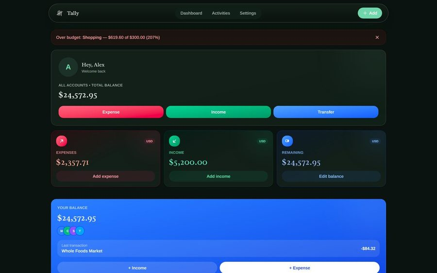
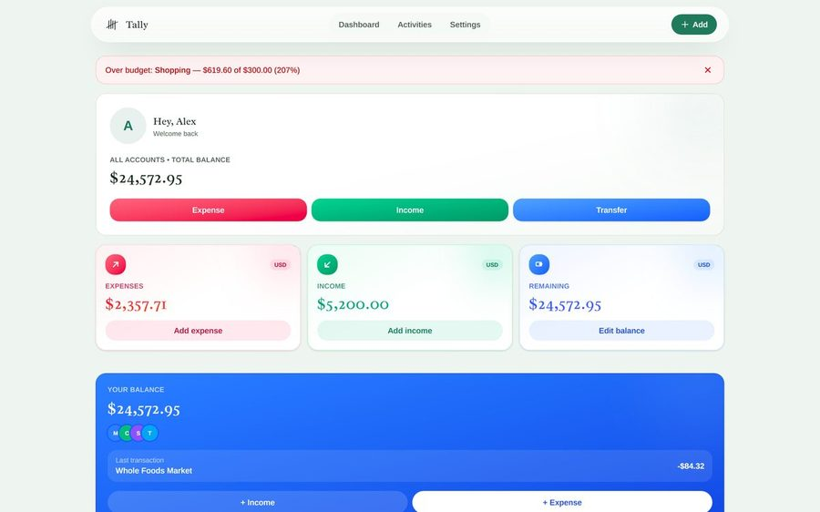
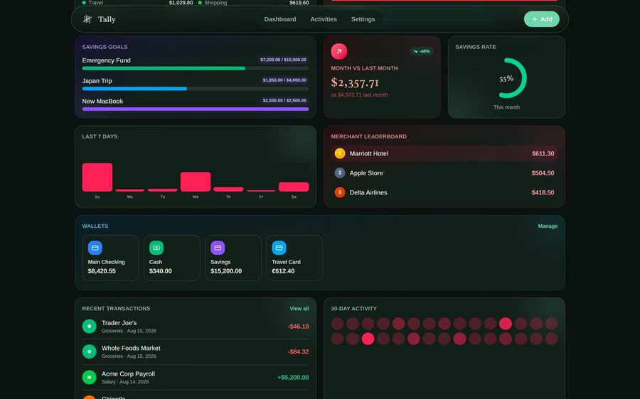
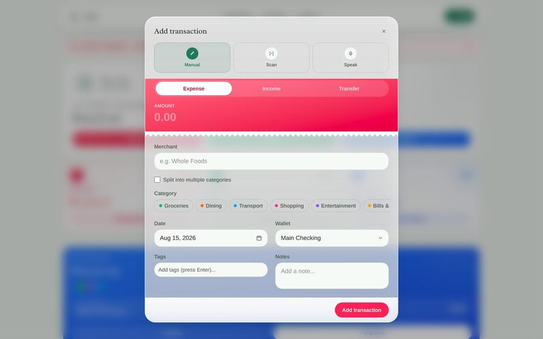
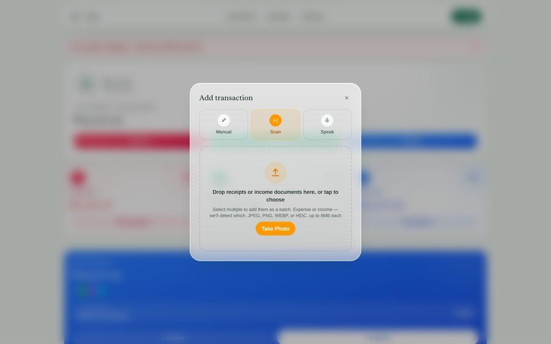
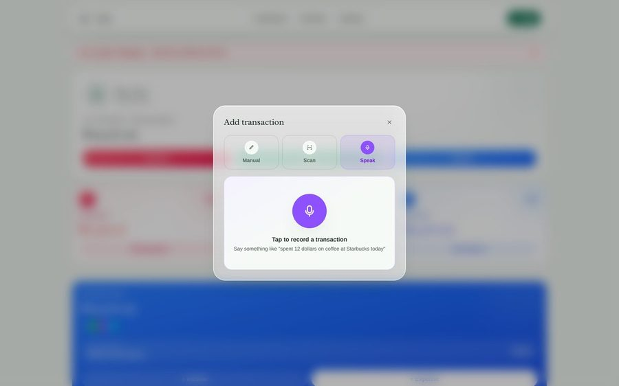
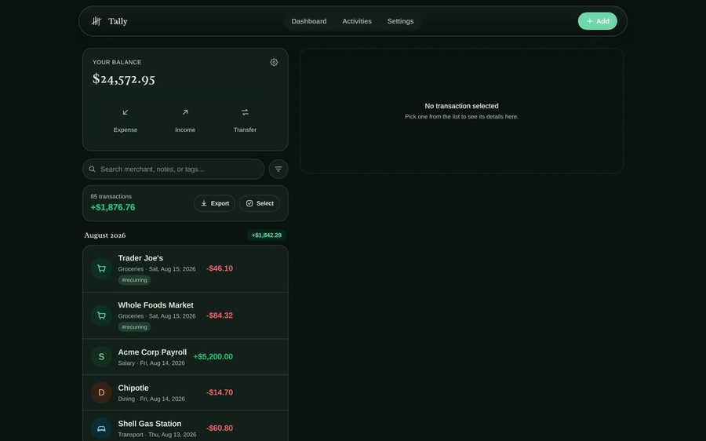
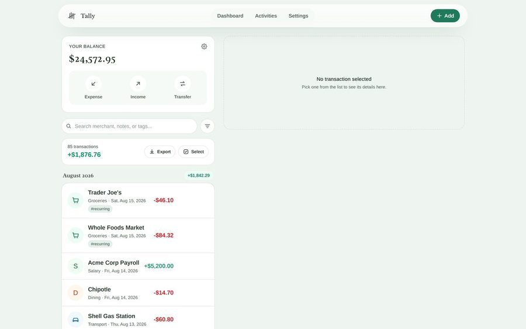
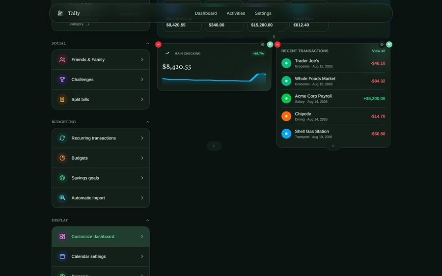
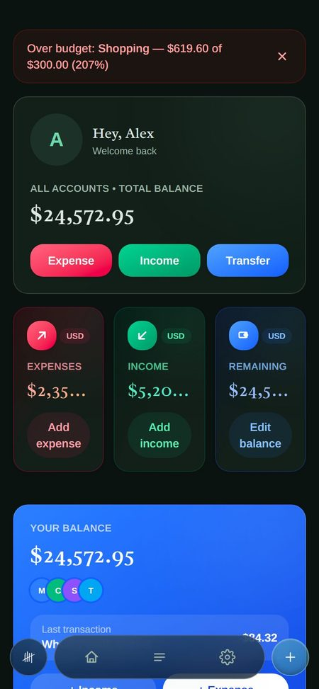
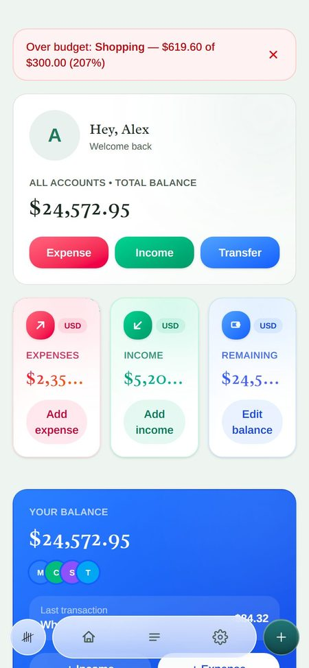
Tools
Good to know
Account recovery is fully self-service now — reset a forgotten password by email, delete your account, or sign out of every device at once, all from Settings. Automatic receipt import leans on iOS Shortcuts or Android's share sheet rather than the app quietly watching your photo library in the background, so it needs a one-time setup rather than being fully invisible. And if you deploy your own instance rather than using the live one, receipt scanning, voice entry, and auto-import need a free Gemini API key from Google AI Studio, password-reset and notification emails need a free Resend API key, and the app needs a Postgres database, which Vercel provides for free through Neon — manual entry and CSV export work without any of the optional keys.